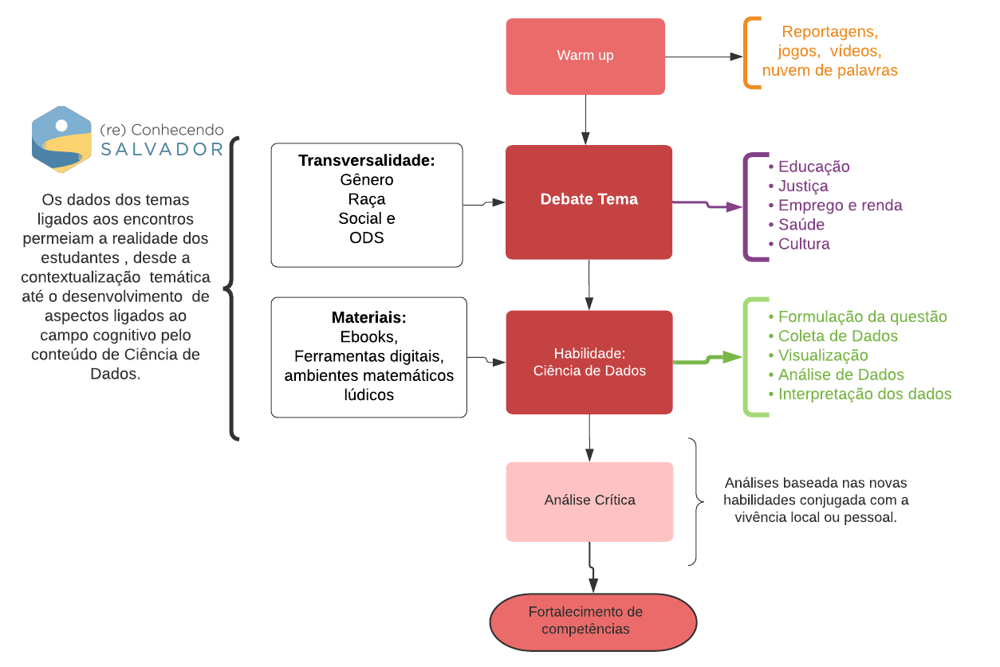

2 Relatório - Ciência de Dados
2.1 Introdução
A disciplina de introdução à ciência de dados é constituída de um propósito transformador, aproximar estudantes e escola do universo dos dados de maneira a se apropriar dos principais dados, sistemas de informação e tomada de decisões no contexto local de um grupo de discentes, docentes, comunidade escolar e de bairro.
Coordenada por uma equipe da universidade e operada num contexto à distância, neste relatório são reveladas as principais estratégias e insights resultado da promoção do encontro destes vários atores. Esta disciplina não é uma ilha, em paralelo a sua execução são realizadas atividades de protagonismo racial, social e de gênero, práticas investigativas e inteligência artificial. Estes temas tão atuais, tangenciam os propósitos das ciências de dados, funcionando como um mecanismo de cooperação. Uma rede de colaboradores palestrantes também enriqueceram o repertório de todos os atores que participaram do projeto, tornando a execução da discipliana de ciência de dados uma atividade punjante e transformadora do contexto social ao qual pertencem estes jovens cientistas.
Nas seções a seguir são destacadas as principais experiências vivenciadas com os estudantes participantes do projeto Ciência de Dados na Educação Pública no contexto desta disciplina. Foram realizados com os Jovens Cientistas (JC) 11 encontros dedicados apenas para ciência de dados. Parte desses encontros é resultado da proposição de um tema em 2 dias diferentes, sendo o restante constituída apenas de um encontro, contudo guiado por retornos via whatsapp.
2.2 Metodologia
Os encontros com os estudantes foram realizados de forma online e
síncrona. As atividades foram realizadas de maneira que favorecessem
o diálogo entre os participantes. Com o objetivo de desenvolvimento de
habilidades ligadas a ciência de dados, como a formulação de perguntas
e hipóteses sobre um determinado tema, coleta e organização de dados,
representação matemática por gráficos e outras visualizações de dados e
por fim aplicações de elementos matemáticos e estatísticos para síntese
de informações que conduzem tomada de decisão entralaçamos temas chave
como educação, saúde, população, transportes etc. Aliado a esta abordagem
sempre foram atingindos os temas transversais ligados justiça
social, racial e de gênero por meio de uma estratégias que envolviam
dados desagregados. Todo este cenário promove a emergência das
questões ligadas às humanidades digitais, como o amplo debate
gerado pelo viéses estatísticos. Nas seções a seguir são
apresentados os relatos dos encontros que dão detalhes
destas experiências.

2.3 Tabela resumo de habilidades dos encontros
Nesta seção resumimos principais conceitos, habilidades e temas avaliados ao longo deste ano. Permitindo que seja alcançada uma ideia destes encontros num único olhar.
| Encontros | Tema | Cód. Habilidade | Descrição |
|---|---|---|---|
| Introdução à Ciência de dados | Sistemas de recomendações | EMIFCG01 | Compreensão do funcionamento das tecnologias de digitais baseada em ciências de dados. |
| Coleta de dados | Programas de assistência social e distribuição de renda | EMIFMAT07 e EMIFMAT08 | Compreensão dos sistemas de coleta de dados e informações ligados aos principais programas de assistência social e redistribuição de renda. |
| Visualização de dados | Exame Nacional do Ensino Médio | EMIFMAT07 | Identificação de fatores correlacionados ao desempenho no ENEM por meio de visualização de dados. |
| Correlação e Causalidade | Capoeira e dados de futebol | EMIFMAT05 e EMIFMAT06 | Desenvolvimento de pensamento matemático e estatístico por meio do diálogo sobre manifestações culturais como capoeira. E de conceitos de causalidade e correlação por meio de análise de dados de futebol |
| Indicadores de tendência central - Média e Mediana | Indicadores criminais | EMIFCG07 | Análise crítica de indicadores criminais suportado em visualização de dados e desenvolvimento da capacidade de síntese por meio de estatísticas. |
| Pesquisa Amostral | Sistema de transporte público e violência contra mulher | EMIFCG02 e EMIFCNT02 | Desenvolvimento de habilidades ligadas a formulação de hipóteses, planejamento e execução de pesquisas amostrais e compreensão da mobilidade e segurança da mulher. |
| Introdução à probabilidade | Pesquisa Nacional da Saúde do Escolar (PeNSE) | EMIFMAT03 e EMIFMAT06 | Representação e aquisição de vocabulários ligados a probabilidade promovendo a habilidade de transposição de conhecimento para diversas áreas. Debate ligado a saúde do estudantes por meio da pesquisa PeNSE IBGE. |
2.4 Dicussão e conclusão
O principal estrato do material dos relatos dos encontros
de ciências de dados constitui-se dos pilares
sobre os quais este projeto se baseou para sua realização.
Os estudantes buscam a todo momento caminhos para dialogar
sobre suas experiências, sendo elas as mais profundas
quanto a desigualdade social. Muito embora
isto seja verdade, esse também é o elemento
que os posicionam num local de autoridade para tratar
destes problemas. Incluímos na nossa pequena trajetória
com estes incríveis jovens, informações a respeito
de sistemas de redistribuição de renda e auxílio
social, violência contra mulher no Estado da Bahia e a
perda de mobilidade urbana em Salvador e indicadores de
segurança com recortes de gênero e raça/cor.
Em resumo, eles reconhecem estes temas
pelo lado em que os dados não revelam com tanto clareza,
trazendo uma forte base argumentativa. Por outra lado,
a Ciência de Dados dá um caminho diferente, para acessar
outras visões sobre estes assuntos. Esta ponte
é ainda mais reforçada quando trazemos para os encontros
experiências culturais que são ainda mais
íntimas a estes estudantes, como a capoeira ou o debate
sobre o que são os seus alimentos, seus hábitos e sua
saúde. Este entralace entre desigualdade social,
escancaradamente revelado nas justificativas
de faltas dos estudantes participantes do projeto,
emergem aquilo que é de conhecimento tácito,
a maioria dos jovens de Salvador não estão incluídos
de forma qualificada numa sociedade digitalizada.
Também foi alvo de observação do projeto
a necessidade que os estudantes tiveram
de gerenciar o tempo devido ao retorno as aulas
online e depois presencial. Alguns
relataram como o volume de atividades
começaram a intereferir na sua ampla
capacidade de participar de todas as
atividades.
Os avanços observados na argumentação de alguns
estudantes ao longo dos encontros, revelados
na frequente utilização de vocábulos da área,
contrasta com o que tipicamente se observa
nos principais indicadores da educação brasileira
a respeito dos avanços em disciplinas ligadas a
área de exatas.
Embora dados recentes revelem o crescimento do IDEB,
por exemplo, os índices das escolas participantes
estão aquém do que se espera para que o jovem
alcance os elementos idealizados como uma boa educação.
Por todo o contexto complexo da realização das atividades
durante a pandemia, aliado às dificuldades relatadas pelos
estudantes, a frequente participação e a exitosa realização
das avaliações do projeto demonstram que é possível
alcançar resultados neste tecido de interface entre os diversos
atores. Num momento da história que a tecnologia digital
tem que ser planejado para evitar mais um braço de desigualdade,
atividades como esta são exemplos que devem ser
ampliadas para um número maior de estudantes.